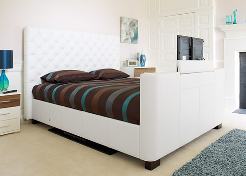

This story features a 19 year old named Ryan and his daily routine that he does almost everday. It is largely based on my personal life and what I do everyday and the feelings I have throughout the day. My goal is to entertain the viewer and show how everyday life is for a working student in NYC at that age.
"Dreams TV bed" By Dreams Beds and Mattresses. Licensed under CC by 2.0
Go to the next pageCredits: This page uses this sound from freesound: Yawning by ckvoiceover (http://freesound.org/people/ckvoiceover/sounds/401338/